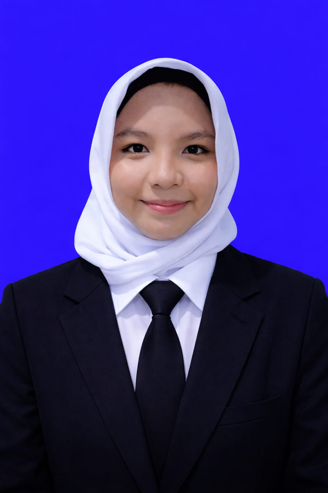

CV AATIKAH

Aatikah 1B Bisnis Digital
DATA DIRI
Nama: Aatikah
NIM: E030426001
Tempat Tinggal: Banjarmasin, Kalimantan Selatan
No. HP: 083824138185
Email: atikahanita65@gmail.com
PENDIDIKAN
- SDN Sungai Miai 2 Banjarmasin (2013 - 2019)
- SMP Negeri 24 Banjarmasin (2020 - 2023)
- SMK Negeri 2 Banjarmasin (2023 - 2026)
PENGALAMAN
Fresh Graduate SMK Negeri 2 Banjarmasin, Jurusan Pekerjaan Sosial.
Memiliki pengalaman magang sebagai Operasional Lembaga Keuangan
di DT Peduli Kalimantan Selatan.
Pengalaman:
- Pengelolaan Lembaga Keuangan Amil & Zakat bagian Operasional Keuangan
KEAHLIAN
- Kerja Sama Tim
- Komunikasi
- Administrasi Dasar
- Pengelolaan Dokumen
- Tanggung Jawab
- Disiplin
- Cepat Belajar
- Manajemen Waktu
- Mampu Bekerja di Bawah Arahan
KARAKTER PROFESIONAL
- Disiplin
- Bertanggung Jawab
- Mampu bekerja dalam Tim
HOBI